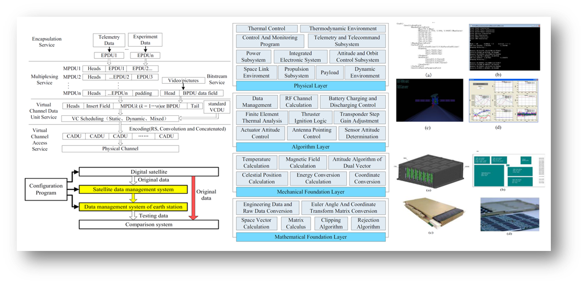
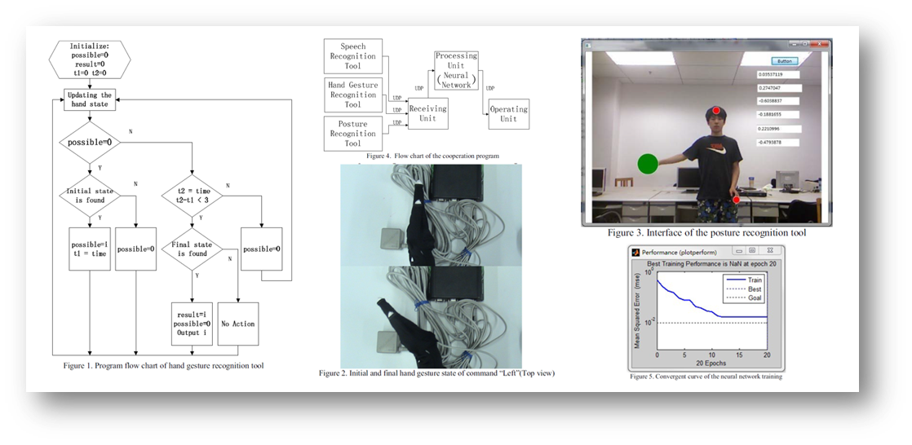

<!DOCTYPE html PUBLIC "-//W3C//DTD XHTML 1.1//EN"
  "http://www.w3.org/TR/xhtml11/DTD/xhtml11.dtd">
<html xmlns="http://www.w3.org/1999/xhtml" xml:lang="en">
<head>
<meta name="generator" content="jemdoc, see http://jemdoc.jaboc.net/" />
<meta http-equiv="Content-Type" content="text/html;charset=GBK" />
<link rel="stylesheet" href="jemdoc.css" type="text/css" />
<title></title>
</head>
<body>
<table summary="Table for page layout." id="tlayout">
<tr valign="top">
<td id="layout-menu">
<div class="menu-category"><div class="menu-head">HENG SHI</div></div>
<div class="menu-item"><a href="index.html">Home</a></div>
<div class="menu-item"><a href="publication.html" class="current">Publications</a></div>
<div class="menu-item"><a href="research.html">Research</a></div>
<div class="menu-item"><a href="honoraward.html">Honors&nbsp;&amp;&nbsp;Awards</a></div>
<div class="menu-item"><a href="activities.html">Activities</a></div>
<div class="menu-item"><a href="life.html">Life</a></div>
<div class="menu-item"><a href="CV_SH.pdf">Resume</a></div>
<div class="menu-item"><a href="contact.html">Contact</a></div>
</td>
<td id="layout-content">
<h2>Publications [<b><a href="https://scholar.google.com/citations?user=maZqCl8AAAAJ&amp;hl=en" target=&ldquo;blank&rdquo;>Google Scholar</a></b>]</h2>
<table class="imgtable"><tr><td>
&nbsp;</td>
<td align="left"><p><b>Heng Shi</b>, Jihong Zhu, Xiaming Yuan, Minchi Kuang, Wufan Wang, Zhihui Deng. &ldquo;Research on Intercepting Strategy of Multiple Kill Vehicle in Midcourse Defense Based on Multi-Sensors Fusion
Method&rdquo;. <i>IFAC-PapersOnLine</i>, 50(1): 15032-15037, 2017. (<b><a href="https://www.ifac2017.org/" target=&ldquo;blank&rdquo;>IFAC 2017</a>, Toulouse</b>)&nbsp;&nbsp;<b><font color="Red">[Oral]</font></b>
<br /> [<a href="pub/IFAC.pdf" target=&ldquo;blank&rdquo;>paper</a>]&nbsp;[<a href="https://www.youtube.com/watch?v=_eiH_-l_YNY&amp;feature=youtu.be" target=&ldquo;blank&rdquo;>video</a>]&nbsp;[<a href="conference.html" target=&ldquo;blank&rdquo;>@conference</a>]</p>
</td></tr></table>
<table class="imgtable"><tr><td>
&nbsp;</td>
<td align="left"><p><b>Heng Shi</b>, Jihong Zhu. &ldquo;Trajectory Planning of Approaching Non-cooperative Targets Based on Gauss Pseudospectral Method&rdquo;. <i>Advances in the Astronautical
Sciences</i>, 160(1): 1527-1538, 2017. 
<br />(<b><a href="http://www.space-flight.org/docs/2017_winter/2017_winter.html" target=&ldquo;blank&rdquo;>27th AAS/AIAA Space Flight Mechanics Meeting</a>, San Antonio</b>)&nbsp;&nbsp;<b><font color="Red">[Oral]</font></b>
<br /> [<a href="pub/AAS.pdf" target=&ldquo;blank&rdquo;>paper</a>]&nbsp;[<a href="https://www.youtube.com/watch?v=1zYYM5NaFJA&amp;feature=youtu.be" target=&ldquo;blank&rdquo;>video</a>]&nbsp;[<a href="conference.html" target=&ldquo;blank&rdquo;>@conference</a>]</p>
</td></tr></table>
<table class="imgtable"><tr><td>
&nbsp;</td>
<td align="left"><p><b>Heng Shi</b>, Jihong Zhu. &ldquo;Research on Application Specication of Chinese Domestic Satellite Technology in Field of Intelligent Tourism&rdquo;. <i>China Satellite Navigation
Conference</i> (CSNC). 2017. 
<br /> [<a href="pub/CSNC.pdf" target=&ldquo;blank&rdquo;>paper</a>]</p>
</td></tr></table>
<table class="imgtable"><tr><td>
&nbsp;</td>
<td align="left"><p>XiaonaWei, Yunfeng Dong, Fengrui Liu, Lu Tian, Zhao Hao, <b>Heng Shi</b>. &ldquo;Principal component analysis and cluster analysis based orbit optimization for earth observation satellites&rdquo;. <i>The Journal of Chongqing University-English</i>. 15(3): 83-94. 2016.
<br /> [<a href="pub/JCQU.pdf" target=&ldquo;blank&rdquo;>paper</a>]</p>
</td></tr></table>
<table class="imgtable"><tr><td>
&nbsp;</td>
<td align="left"><p>Xiaona Wei, <b>Heng Shi</b>, Lu Tian, Zhao Hao, Chunsheng Zhang. &ldquo;Design and Development of a Universal Verication System for Satellite Data Management System Based on AOS&rdquo;. <i>International Conference on Instrumentation and Measurement, Computer, Communication and Control</i> (IMCCC), IEEE. 2015.
<br /> [<a href="pub/IMCCC.pdf" target=&ldquo;blank&rdquo;>paper</a>]</p>
</td></tr></table>
<table class="imgtable"><tr><td>
&nbsp;</td>
<td align="left"><p><b>Heng Shi</b>, Yunfeng Dong. &ldquo;Research on Cooperative Control of Human-Computer Interaction Tools with High Recognition Rate Based on Neural Network&rdquo;. <i>International Conference on Virtual Reality and Visualization</i> (ICVRV), IEEE. 2014.
<br /> [<a href="pub/ICVRV.pdf" target=&ldquo;blank&rdquo;>paper</a>]</p>
</td></tr></table>
<h2>Patents</h2>
<ul>
<li><p><b>Heng Shi</b>, Jihong Zhu. A Three-dimensional Real-time Omnidirectional Guidance Law, China Patent, CN201810246200.3.<br /></p>
</li>
<li><p><b>Heng Shi</b>, Jihong Zhu. A Real-time Multi-prediction Guidance Law for Aircraft Defending Missile, China Patent, CN201818001011.0.</p>
</li>
</ul>
<h2>Forums</h2>
<ul>
<li><p>2017 Tsinghua Doctoral Student Academic Forum &amp; 6th Postgraduate Academic Forum. Poster &amp; Oral Presentation. &nbsp;[<a href="images/fig-forum1.png" target=&ldquo;blank&rdquo;>poster</a>]&nbsp;[<a href="forum.html" target=&ldquo;blank&rdquo;>certificate</a>]</p>
</li>
<li><p>2017 Intelligent Unmanned System Crossover Field Doctoral Academic Forum. Poster. &nbsp;[<a href="images/fig-forum1.png" target=&ldquo;blank&rdquo;>poster</a>]&nbsp;[<a href="forum.html" target=&ldquo;blank&rdquo;>certificate</a>]</p>
</li>
</ul>
</td>
</tr>
</table>
</body>
</html>
